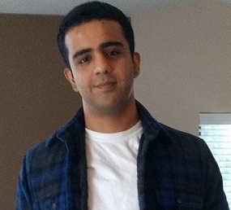

Research & Publications
From deep-learning-driven IoT intrusion detection in Sensors to research on generative AI red teaming and model safety, alongside technical reports and articles.
Explore research ↗
Principal Security Researcher
Microsoft AI Red Team
Destination links on this page open in a new tab.
I investigate how AI models and systems behave under attack, connecting individual weaknesses into realistic, end-to-end adversarial scenarios.
Generative AI security and adversarial machine learning shape my research into model behavior and system vulnerabilities. The work spans publications, contributions to MITRE ATLAS and security assessment tools, and presentations at BSides Seattle and Microsoft BlueHat. Earlier published research on intrusion detection in IoT networks provides a foundation in connected-system security, complemented by experience building and securing production systems—a base for extending adversarial research into cyber-physical and industrial control environments.
These settings introduce distinct security challenges where AI, software, and physical processes interact.
From deep-learning-driven IoT intrusion detection in Sensors to research on generative AI red teaming and model safety, alongside technical reports and articles.
Explore research ↗MITRE ATLAS threat knowledge, Counterfit and PyRIT assessment tooling, and PyRIT Ship—a prototype developed with Joris and presented at BlueHat 2024.
View contributions ↗Master's supervisory committees for two UW Bothell researchers, peer reviewing for IEEE Access and ICCCN, and six repositories prepared for hands-on teaching.
Explore academic engagement ↗